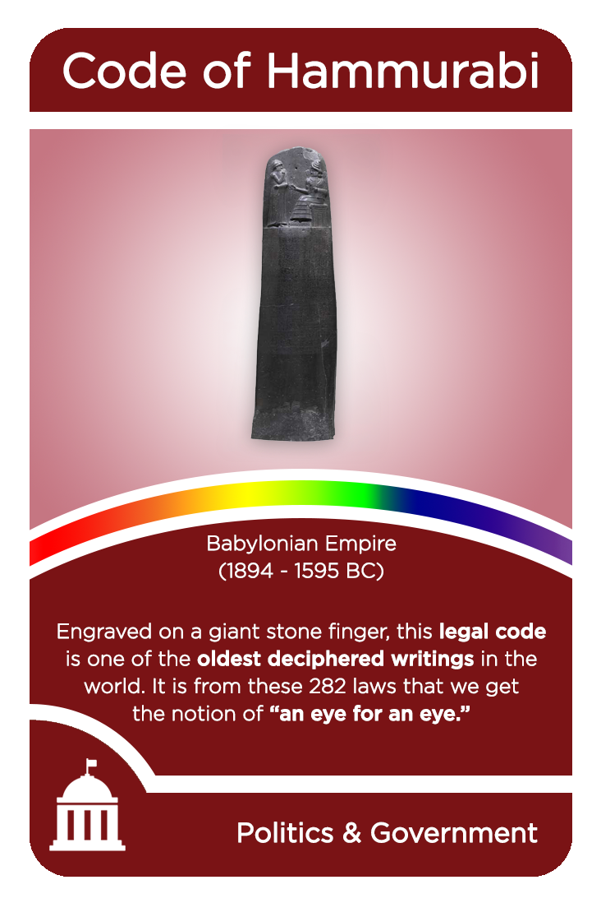
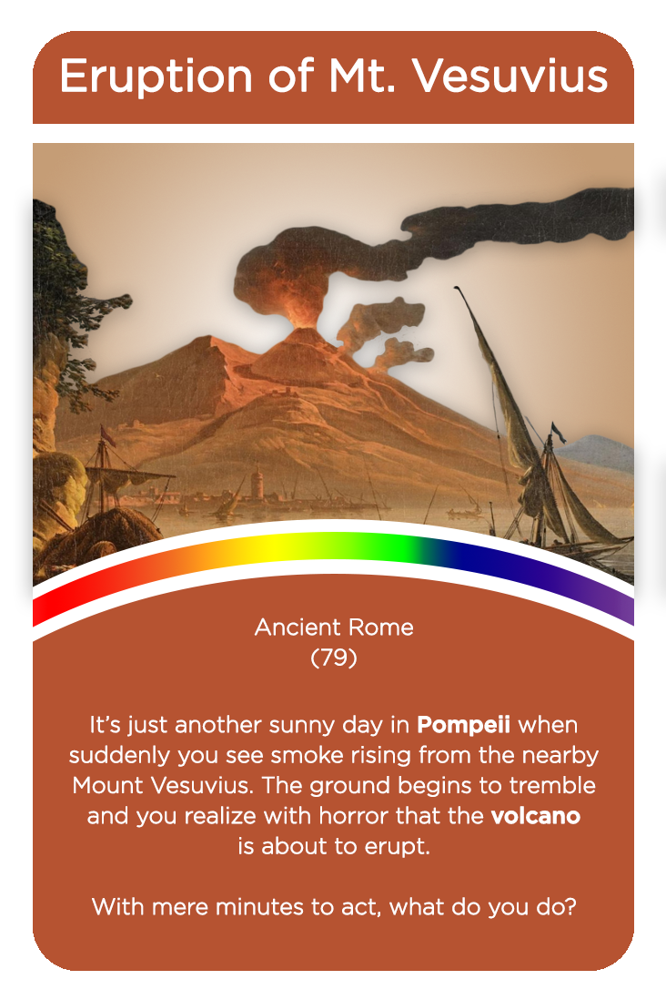
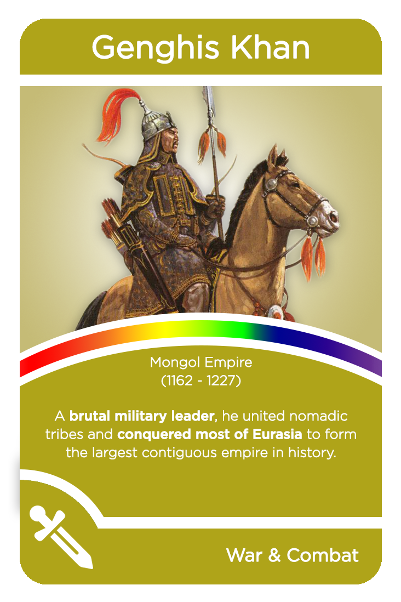
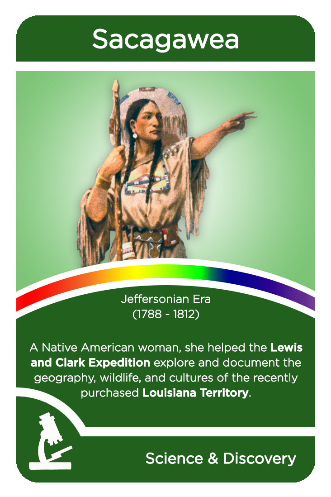
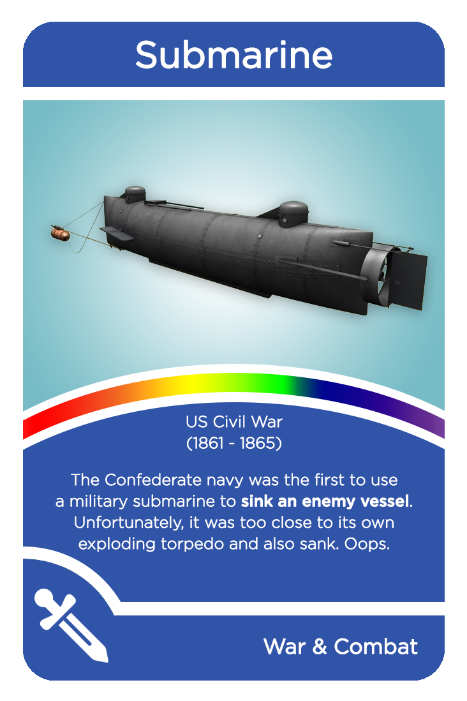
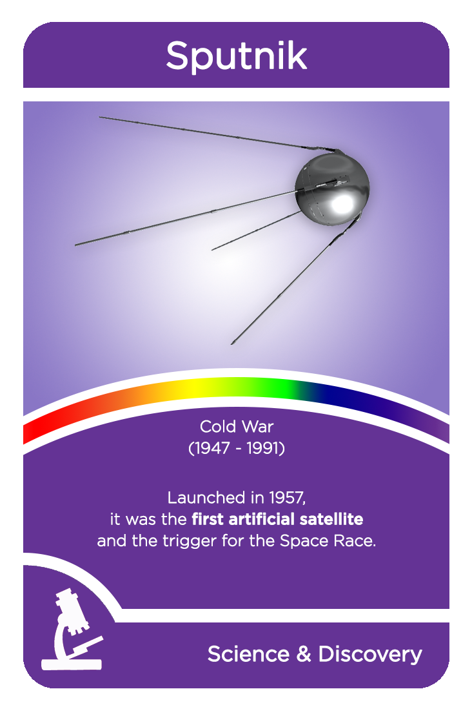
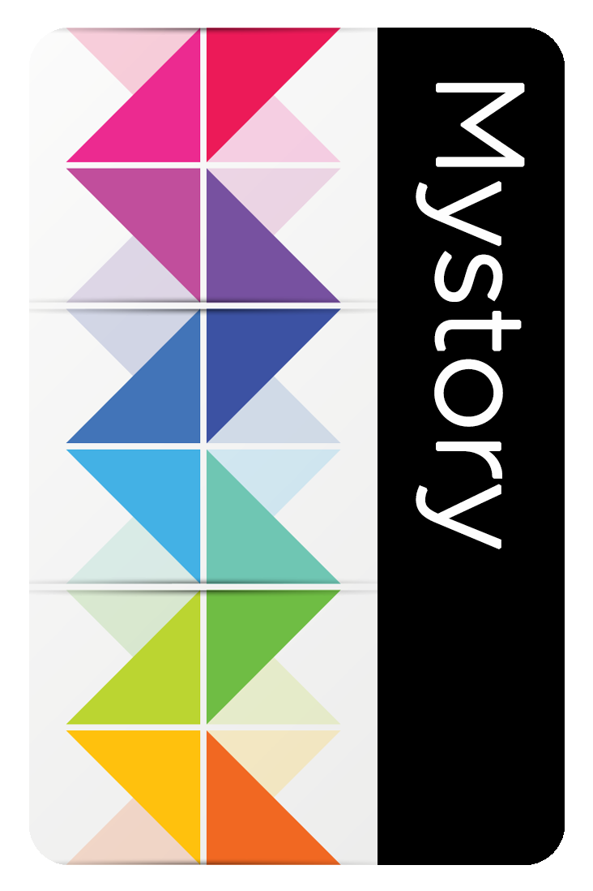
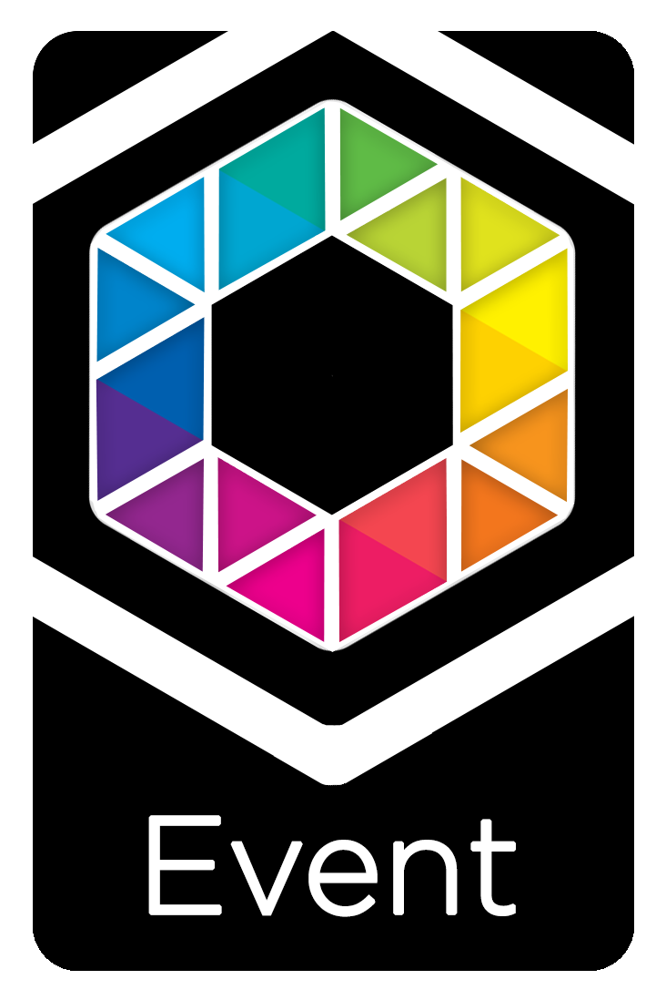

Need
Move world-history review beyond recall by asking learners to interpret, connect, and negotiate the significance of historical elements.
At a glance
Move world-history review beyond recall by asking learners to interpret, connect, and negotiate the significance of historical elements.
Players use historical cards as the building blocks of a shared story, making review an act of creative synthesis and collaboration.
The project produced a playable card set, visual identity, complete rules, and a design refined through iterative playtesting.
It demonstrates how play can create productive constraints that encourage learners to make connections rather than repeat isolated facts.
Methods & tools: Game mechanics · Card and visual design · Rules writing · Playtesting
Scroll or swipe to explore more →







